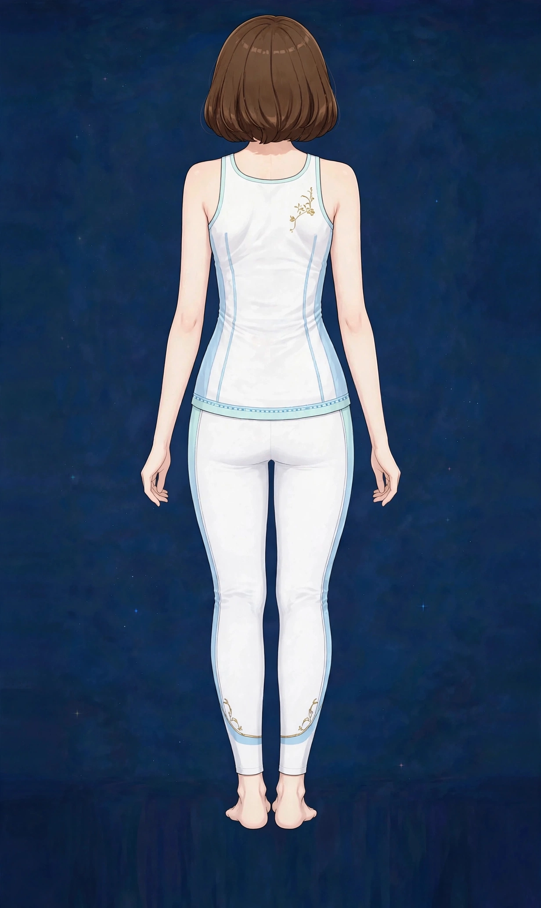
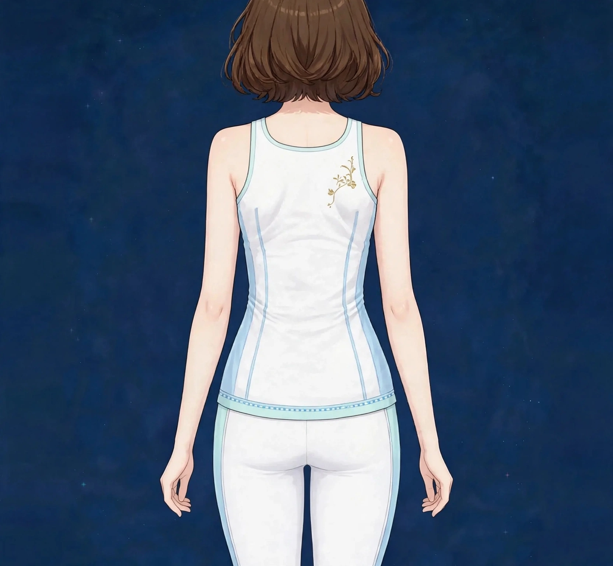

梅田でブライダル前のボディケア｜美容整体で背中・デコルテ・姿勢を整える｜ステラポラリス 梅田・女性専用美容・見た目

結婚式のドレスは、背中、デコルテ、二の腕といった、普段はあまり見せない部分が見える衣装です。「式までに姿勢とラインを整えたい」というご相談が増えるテーマを、部位ごとに整理して解説します。
ドレスで見える部分はどこか
ドレスのデザインにもよりますが、一般に見えるのは背中、肩、デコルテ、二の腕、そして姿勢全体です。特に背中は自分では見えないため、試着や写真で初めて気づく方が多くいます。
当日の見え方を決めるのは、部分のラインだけではなく姿勢です。猫背では背中は丸く見え、デコルテも埋もれます。反対に背筋が伸びた姿勢では、同じ体でもラインがすっきり見えます。図1のように、見える部位と姿勢をセットで整える計画が大切です。
ブライダルケアで大切なのは、直前の追い込みより、計画性です。ドレスの試着スケジュールと合わせてケアの計画を立てると、無理なく続けられます。試着のたびに写真を残しておくと、姿勢やラインの変化を確認でき、モチベーションの維持にもつながります。
こんなサインはありませんか？ — ブライダル前のボディケアのチェックリスト
- 背中の開いたドレスを着る予定がある
- 二の腕のたるみが気になる
- デコルテや鎖骨のラインを整えたい
- 姿勢の悪さが写真で気になっている
- 式までに数か月ある
- 試着で背中のはみ肉が気になった
- 当日の写真をきれいに残したい
- 肩こりや背中の張りも一緒に気になる
当てはまる項目が多いほど、整えたい部位が広い可能性があります。式までの期間に合わせて、優先順位をつけて計画を立てることが大切です。
ブライダル前に整えたい要因
- 姿勢の崩れ：猫背や巻き肩は、背中・デコルテ・二の腕すべての見え方に影響します。ブライダルケアの土台は姿勢と言ってもよい部分です。
- 背中の張りとはみ肉：肩甲骨まわりが固まっていると、背中のラインはもたついて見えます。ドレスの縁に乗るはみ肉が気になる方は、この部分のケアが中心になります。
- 二の腕のたるみ：腕の後ろ側のたるみは、ドレス姿で目立ちやすい場所です。詳しくは二の腕のページでも解説しています。
- むくみ：大事な週は緊張や準備の疲れでむくみが出やすくなります。当日のコンディション作りも、計画の一部です。
- 肌の見た目：背中やデコルテの肌の見た目は、巡りや生活リズムと関係します。直前の新しい化粧品は肌の負担になることもあるため、早めの準備が安心です。
- 準備期間の疲労：式の準備は想像以上に体力を使います。疲労が姿勢や顔色に表れる前に、回復の時間を計画に入れておくことが大切です。
図1｜ドレスで見える背中と姿勢
東洋医学から見た考え方
東洋医学では、背中の中央には督脈が通り、両脇には膀胱経が流れるとされます。背中の張りは、疲れの蓄積の表れとして見立てられることがあり、結婚式前の時期の緊張や疲労とも重なります。
デコルテまわりは任脈や肺経と関連づけられ、顔色の印象ともつながる場所です。施術では、背中からデコルテ、二の腕までを一続きのラインとして眺め、巡りを助けながら整える進め方を取ります。
代表的なツボ
ブライダル前のケアでよく挙げられるツボを紹介します。背中は自分で触れにくいため、ボールを使う方法や、パートナーに頼む方法もあります。
図2｜背中で見たいポイント

おすすめ施術
美容整体・オイルマッサージ
施術では、まず背中と肩甲骨まわりをオイルマッサージでほぐし、デコルテと二の腕へと一続きでケアを広げます。そのうえで美容整体で、猫背や巻き肩といった姿勢の土台に触れながら、当日の立ち姿が整って見えるようアプローチします。
通い方の目安としては、式の2〜3か月前から月1〜2回を目安に始め、式の1週間前くらいに最後の調整をする計画が立てやすい組み立てです。直前の駆け込みでは、姿勢の積み重ねまでは整えにくいため、早めの相談をおすすめします。
最後の施術は、肌への負担を考えて式の数日前までに行い、当週はセルフケアと休息に充てる流れもお伝えします。90分の中で、優先部位を絞って組み立てることも可能です。
自宅でできるセルフケア
ブライダル前のセルフケアは「姿勢を保つ・巡りを滞らせない・肌を荒らさない」が基本です。式が近づいたら、新しいケア用品を試すことは避け、使い慣れたものを続けてください。
- 1．肩甲骨まわりのストレッチ両肘を後ろへ引いて肩甲骨を寄せる動きを、朝晩に数回ずつ。背中のラインと姿勢を保つ基本の動きです。
- 2．姿勢の写真チェック月に一度、横と後ろからの写真を撮って姿勢の変化を確認します。自分では見えない背中の変化を、記録で確かめる方法です。
- 3．二の腕と脇の巡りケア脇から肘へなで下ろすケアと、腕を上げる習慣を続けます。二の腕のページのセルフケアもあわせてご覧ください。
- 4．睡眠と塩分の調整式の直前週は、睡眠を優先し、塩分を控えめにしてむくみを防ぎます。当日のコンディションは、最後の1週間の過ごし方で決まります。
図3｜ドレスで見える範囲の目安
場面別の注意
試着の日
試着の写真は、姿勢と背中のラインを確認する良い機会です。気になった部分をメモしておくと、施術の組み立てに活かせます。
前撮りの前
前撮りは本番より先に写真が残るため、ひとつの区切りとしてケアの計画を立てる方が多いです。日程が決まったら、逆算して相談してください。
式の直前週
直前週は新しいことを始めず、睡眠とむくみ対策に集中する時期です。最後の施術は数日前までに済ませ、当日は姿勢を意識するだけに留めます。
受診の目安
次のような場合は、サロンでのケアの前に医療機関への受診をおすすめします。
- 背中や腕に痛みやしびれが続いている
- 肌に炎症やただれがあり、施術で触れるのが難しい
- 発熱など体調不良がある
- 妊娠中など、施術の可否を医師に確認すべき事情がある
- アレルギーがあり、使用するオイルについて相談が必要
当店は医療機関ではなく、診断は行いません。迷うときは、まずかかりつけの医療機関にご相談ください。
よくある質問
Q．式まで1か月しかありませんが間に合いますか？
姿勢やむくみといった部分は、1か月でも見え方の変化を目指せます。まずは現状を確認し、優先順位をつけた計画をお伝えします。お早めにLINEで日程をご相談ください。
Q．何回通えばよいですか？
期間と整えたい部位によりますが、2〜3か月前から月1〜2回、最後に式の数日前に1回という組み立てが多い目安です。単発のご利用でも、姿勢と巡りを中心に整えます。
Q．背中のケアだけでも受けられますか？
90分の中で背中を中心に組み立てることは可能です。ただし姿勢が関係する場合は、肩や骨盤側のケアも少し含めたほうが、背中のラインは整いやすくなります。
Q．パートナーと一緒に相談できますか？
当店は女性専用で、施術を受けられるのは女性のみです。ご相談自体はLINEで受け付けていますので、気になる点は事前にお伝えください。
関連するお悩みページ
関連する経絡ページ
ご予約
ステラポラリス（大阪・梅田／女性専用）｜美容整体・オイルマッサージ 90分 10,000円｜月〜土 17:00〜22:00・完全予約制・中崎町駅徒歩5分
ご予約はLINE公式アカウントで受け付けています。希望の日時と、気になる場所を送ってください。
さらに学びたい方へ：現場で使われる専門書（PR）
このページのテーマに合わせて選んだ本と、当店の施術でも参考にしている専門書です。


※本ブロックのリンクはAmazonアソシエイト・プログラムおよび楽天アフィリエイトによる広告リンクです。使用感の保証をするものではありません。